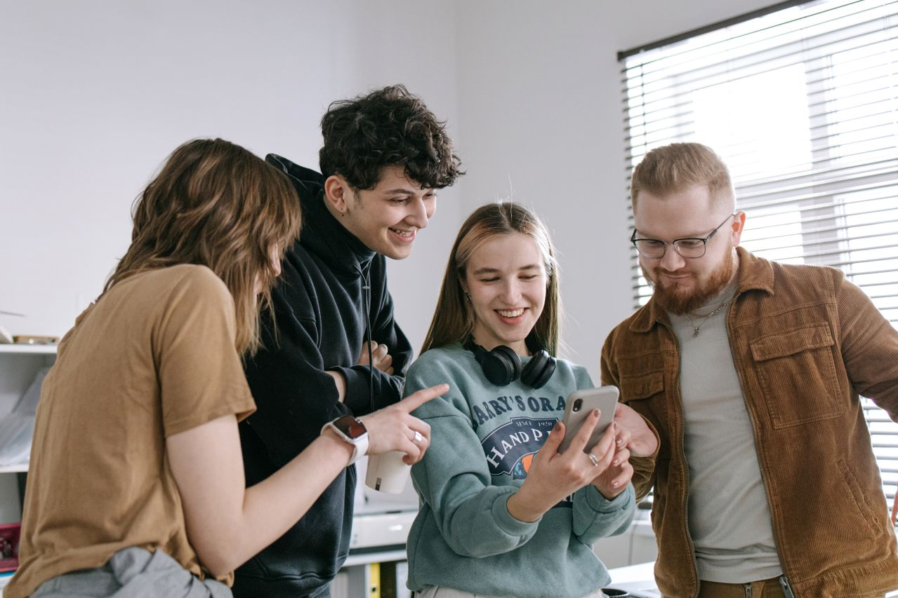
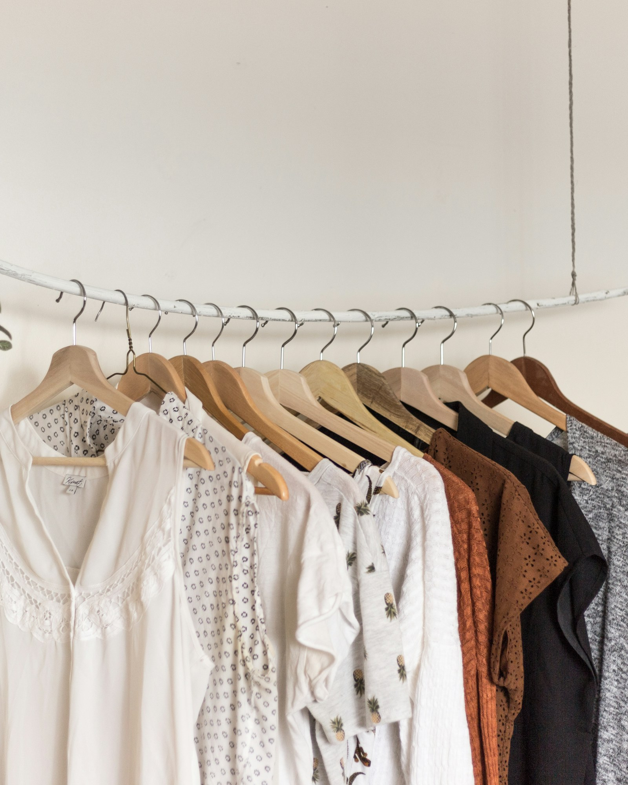
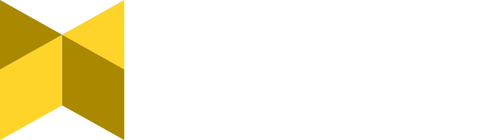

Comprender antes de proponer
Delimitamos una comunidad, escuchamos su contexto y formulamos preguntas abiertas. La investigación se hace con consentimiento y minimización de datos.
Anderer Sinn presenta · Sprint de diseño de producto tech
Un laboratorio práctico de cinco semanas para comprender a una comunidad, descubrir oportunidades de diseño y convertir una idea en un prototipo tecnológico que puedas probar y mostrar. Usa agentes de inteligencia artificial para prototipar e iterar dirigiendo el proceso con metodología de Diseño Centrado en Humanos.
Desde $129.000 COP · modalidad estudio autónomo, sin acompañamiento semanal.

Nos basamos en el diseño centrado en personas
Emplearemos las metodologías del Human Centered Design y tendremos discusiones sobre ética, privacidad, transparencia y otros asuntos clave.
El laboratorio en movimiento
El reel del curso-proyecto resume el espíritu del Sprint: comprender antes de proponer, materializar para aprender y compartir lo que descubrimos.
Video vertical · 50 segundos. Activa el sonido si lo deseas.
Ver el recorrido de las cinco semanasEl laboratorio
Este curso-proyecto es un laboratorio de creación tecnológica centrado en las personas. La programación es un medio para aprender a diseñar y materializar soluciones, no un objetivo aislado. Aprovechamos la generación de código mediante agentes de inteligencia artificial para prototipar, experimentar e iterar. Durante cinco semanas pasarás de comprender un contexto y formular un reto de diseño a construir una demostración tecnológica, probarla y compartir lo aprendido.
Delimitamos una comunidad, escuchamos su contexto y formulamos preguntas abiertas. La investigación se hace con consentimiento y minimización de datos.
Usamos agentes de IA para generar código, explorar alternativas y construir prototipos. La programación es un medio pero el dieño guía el proceso de prototipado e iteración.
Ponemos el flujo frente a personas, documentamos lo que ocurre y decidimos qué cambiar. Una intuición no es evidencia.
Lo que te llevas
Resultados concretos, acotados y documentados. El objetivo es aprender haciendo, no acumular entregables decorativos.
De una comunidad y una necesidad, sustentada en evidencia recogida con criterios éticos.
Entre tres y cinco hallazgos o insights priorizados, y una oportunidad formulada como “¿Cómo podríamos…?”.
La idea que merece ponerse a prueba y el recorrido de una tarea clave.
Para probar la experiencia antes de construir un backend.
Registro de lo observado y de los cambios que esas pruebas sugieren.
Un flujo principal con despliegue o demo verificable, según el proyecto.
Proceso documentado, pitch de dos a tres minutos y demostración para la EXPO.
Alcance: el resultado es un prototipo para aprender, probar y comunicar una oportunidad. No es un producto listo para producción, una empresa constituida, una garantía de ventas, financiación, product-market fit ni validación definitiva del modelo de negocio. Sin embargo, con un prototipo es posible seguir iterando y desarrollando, así como procurar empezar a ponerlo en el mercado para validar e iniciar la conversación con los eventuales usuarios.
Currículo público
Cada semana combina una pregunta guía, trabajo autónomo, acompañamiento y un entregable. El currículo es exigente, pero está acotado: no se trata de aprender todas las herramientas, sino de tomar buenas decisiones de producto.
Pregunta guía ¿A quién puedo escuchar y qué necesidad merece investigarse?
Delimitarás una comunidad concreta, reconocerás su contexto y prepararás una investigación respetuosa sin asumir de antemano cuál es la solución. Aprenderás a formular preguntas abiertas, identificar barreras de acceso y preparar un instrumento de inspiración con consentimiento y minimización de datos.
Perfil de comunidad, mapa inicial de actores, instrumento de investigación, protocolo de consentimiento y primer contacto preparado para la semana siguiente. También dejarás listo tu entorno de trabajo con agentes de desarrollo.
Idea clave “Make it exist first, make it good later”. Introduciremos a las nociones del diseño centrado en las personas y conversaremos sobre la experimentación siempre de manera ética respetando la privacidad, la seguridad y a las personas participantes.
Pregunta guía ¿Qué sabemos de la comunidad y qué reto merece convertirse en una oportunidad de diseño?
Aplicarás el instrumento de investigación y contrastarás tus intuiciones iniciales con evidencia de la comunidad. Revisarás supuestos sobre quién vive la situación, cuándo y con qué frecuencia ocurre, qué tan relevante es, cómo se resuelve hoy y qué recursos o barreras existen: dispositivo, conectividad, lenguaje, accesibilidad y confianza.
Registro de campo anonimizado, síntesis cualitativa, entre tres y cinco insights priorizados y uno o dos retos formulados como “¿Cómo podríamos…?”. Crearás también una ficha anónima de proyecto para tu portafolio.
Idea clave Separar hechos observados, interpretaciones y supuestos aún no comprobados.
Pregunta guía ¿Qué idea merece ponerse a prueba y cómo se comporta el flujo antes de conectarlo a un backend?
Explorarás alternativas, agruparás y combinarás ideas, elegirás un concepto con criterios explícitos y diseñarás una tarea principal. Construirás una fachada web navegable con HTML, CSS y JavaScript, utilizando datos ficticios para simular una experiencia sin añadir infraestructura antes de necesitarla.
Concepto priorizado, principios de diseño, storyboard o flujo de una tarea, prototipo navegable y registro de pruebas de usabilidad con los cambios que esas pruebas sugieren.
Idea clave Probar primero la comprensión y la experiencia. Poner algo delante del usuario nos enseña más que esperar a tener un producto perfecto y terminado.
Pregunta guía ¿Qué funcionalidad mínima necesitamos para sostener el flujo que las pruebas respaldaron?
Convertirás el prototipo en una demostración mínimamente funcional. Elegirás una arquitectura adecuada al proyecto e integrarás únicamente los servicios necesarios. Aprenderás a trabajar con datos ficticios, credenciales, permisos, privacidad y despliegue.
Un flujo vertical funcional y verificable, un modelo mínimo de datos cuando haga falta, una demo desplegada o ejecutable y una revisión de privacidad, seguridad básica y accesibilidad.
Idea clave Un prototipo funcional no es automáticamente un producto listo para producción. Pero con ese ya nos lanzamos a vender y a validar intención de compra para seguir refinando.
Pregunta guía ¿Qué aprendimos, qué podemos demostrar y cómo invitamos a continuar?
Organizarás el proceso en una narrativa clara, actualizarás tu portafolio, prepararás un pitch y una micro-demostración. Compartirás el resultado en la EXPO presencial de cierre y recibirás retroalimentación.
Portafolio actualizado, pitch de dos a tres minutos, demo, reflexión individual sobre el proceso y definición de un próximo experimento. La actividad opcional es un microdocumental de un minuto sobre el proceso, para publicar únicamente después de la EXPO y con los consentimientos y créditos correspondientes.
Idea claveCrear algo y ponerlo en el mundo deja un precedente. Sea porque las personas lo apropien y lo utilicen o por el aprendizaje del proceso de crear. No se es la misma persona antes y después de un proyecto de diseño. Se conoce más, se empatiza más, se actúa diferente.
Metodología
Tres momentos recurrentes y un cierre presencial. La carga estimada de 34 h suma kickoffs, trabajo autónomo, sesiones de acompañamiento y EXPO; no son horas exclusivamente de clase en vivo.
20 minutos
Comenzamos con una pregunta, el reto de la semana, los criterios de éxito y una orientación concreta. La hora exacta se puede acordar con el grupo.
4 horas
Avanzas a tu ritmo con contenidos digitales interactivos, videos breves y un ejercicio práctico para aplicar lo aprendido.
6:00 a 8:30 p. m. · Colombia
Compartimos avances, revisamos decisiones, hacemos clínicas técnicas, recibimos retroalimentación y definimos el siguiente paso.
El martes 15 de diciembre en la mañana
Compartiremos los proyectos en una EXPO presencial de cierre. Fecha, hora y lugar exactos por confirmar; se realizará el 15 de diciembre de 2026 en Bogotá. Si deseas tomar el curso-proyecto desde otra ciudad no hay problema si no puedes participar en la EXPO.
Caso de ejemplo
Esta demo de página de marketplace (sin el sistema de back) se generó en menos de una hora con agentes, el costo de este proyecto fue cero, empleando modelos gratuitos para los agentes de desarrollo.
Nota: NÓMADA es una demo de portafolio del curso con datos ficticios. No es un negocio activo, se muestra para ilustrar el alcance técnico de los prototipos en relación con el tiempo de desarrollo. A diferencia de esta demo, en el curso-proyecto también se trabajará en el back.

Para quién es
Puede aportar valor a personas emprendedoras, diseñadoras, profesionales de áreas sociales o creativas y personas con curiosidad por la tecnología y el desarrollo de productos.
Tienes una oportunidad o una hipótesis y quieres llevarla a una experiencia tangible.
Quieres ampliar tu práctica hacia producto y tecnología sin dejar el enfoque humano.
Observas necesidades en tu comunidad y buscas herramientas para materializar respuestas.
Te interesa entender cómo se construye un producto digital y probar el proceso con acompañamiento.
No hay un requisito formal de experiencia previa. Sí habrá interacción práctica con herramientas de desarrollo y agentes de IA; contarás con acompañamiento durante el proceso.
Docente
Alfredo Orozco es economista de la Universidad de los Andes. Se ha desempeñado en el diseño de tecnología en campos como la salud, la eduación y el desarrollo social. Desde 2019 combina investigación, datos y desarrollo de software para crear soluciones con impacto social; ha trabajado en proyectos con organizaciones internacionales como la Fundación Panamericana para el Desarrollo (FUPAD), Fundación JADA, Fundación Capital, la ADRES e Innova Schools. Desde 2020 diseña e imparte formación en datos y tecnología en Educación Continua de la Universidad de los Andes. Su enfoque integra innovación tecnológica y diseño centrado en las personas.
Ver perfil en LinkedInOrganiza

Anderer Sinn es un estudio de diseño de tecnología con enfoque en producto. Creemos que el software y los objetos físicos, además de ser funcionales, se convierten en parte de la cultura de una comunidad. Trabajamos desde el diseño centrado en las personas para crear herramientas tecnológicas viables desde el punto de vista del mercado y socioculturalmente relevantes.
Conocer el estudioInversión
Elige la modalidad que corresponde a tu forma de participar. La inversión se expresa en pesos colombianos.
Modalidad estudio autónomo
Sin acompañamiento semanal
Modalidad mentoría
Programa completo de cinco semanas
La realización del curso-proyecto está sujeta a alcanzar el mínimo de inscripciones necesario para garantizar su viabilidad. Si no se alcanza ese mínimo, el curso-proyecto podrá cancelarse y se devolverá la totalidad del dinero recibido.
¿No sabes cuál modalidad elegir? Conversemos antes de decidir.
Hablar sobre mi inscripciónBecas
Si quieres hacer parte del Sprint y necesitas apoyo para cubrir la inversión, postúlate a una de las dos becas disponibles.
Para postularte, escribe a aloroque@anderersinn.com y cuéntanos brevemente quién eres y por qué te interesa participar.
Solicitar una becaEste correo se reserva para solicitudes de beca.
Preguntas frecuentes
Respuestas directas sobre el programa, las modalidades y el proceso de inscripción.
A investigar una necesidad con una comunidad, sintetizar evidencia, formular un reto de diseño, idear y probar una experiencia, prototipar con apoyo de agentes de IA e integrar lo mínimo necesario para demostrar un flujo funcional.
No es un curso tradicional centrado en memorizar sintaxis, tampoco vamos a profundiza en el código. La programación servirá como un medio para diseñar y materializar prototipos. Tendremos fundamentaciones para poder leer código pero sobretodo habrá trabajo práctico con herramientas de desarrollo y agentes.
No se promete un producto listo para producción. El objetivo es construir y comunicar un prototipo con un flujo demostrable, aprender de pruebas tempranas e identificar próximos pasos.
Incluye los contenidos digitales, el kit, el derecho a asistir a la EXPO y una constancia de asistencia. No incluye el acompañamiento semanal ni espacio de presentación del proyecto en la EXPO.
Sí. La modalidad con acompañamiento contempla una constancia de participación/asistencia y en detalle sobre el proyecto desarrollado. La modalidad estudio autónomo contempla una constancia de asistencia. No son una certificación profesional, un título, un diploma universitario ni un certificado universitario.
Primero escríbenos por WhatsApp. Conversaremos contigo sobre el programa y la modalidad que te interesa. Cuando acordemos la inscripción, te compartiremos un formulario de matrícula para registrar tus datos y adjuntar el comprobante de pago.
La realización está sujeta a alcanzar el mínimo de inscripciones necesario para garantizar su viabilidad. Si no se alcanza, el curso podrá cancelarse y se devolverá la totalidad del dinero recibido.
Hay dos cupos de beca. Escribe a aloroque@anderersinn.com y cuéntanos brevemente quién eres y por qué te interesa participar.
Hablemos
Escríbenos por WhatsApp, cuéntanos qué te interesa y resolvamos tus dudas sobre el programa, las modalidades y el proceso de inscripción.
Escribir por WhatsAppLa inscripción se cierra personalmente. No hay pago automático ni reserva de cupo desde esta página.